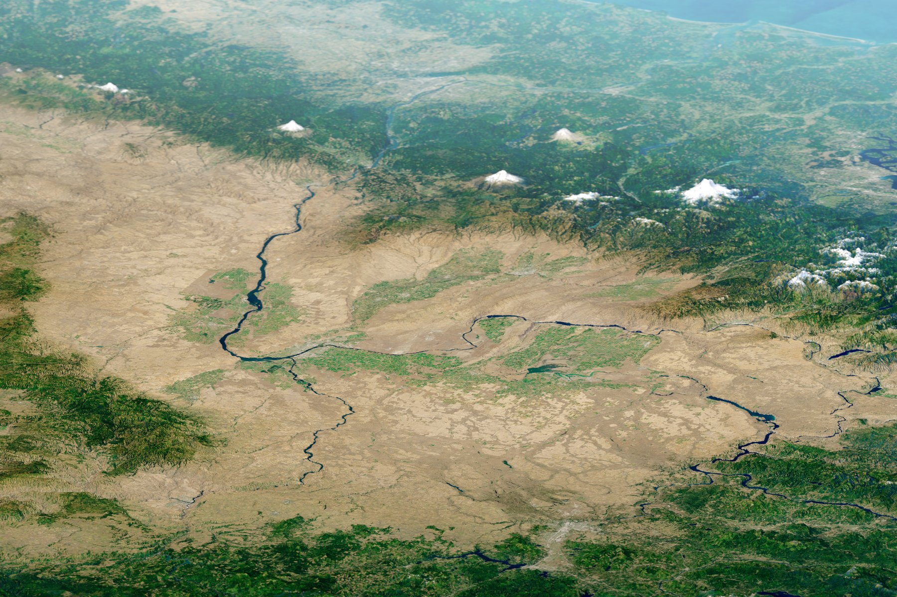
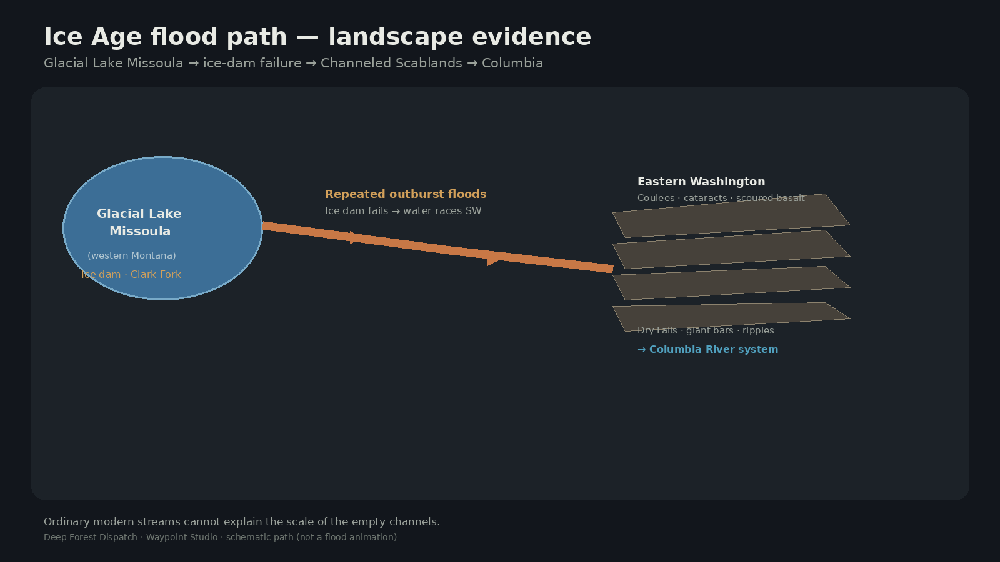
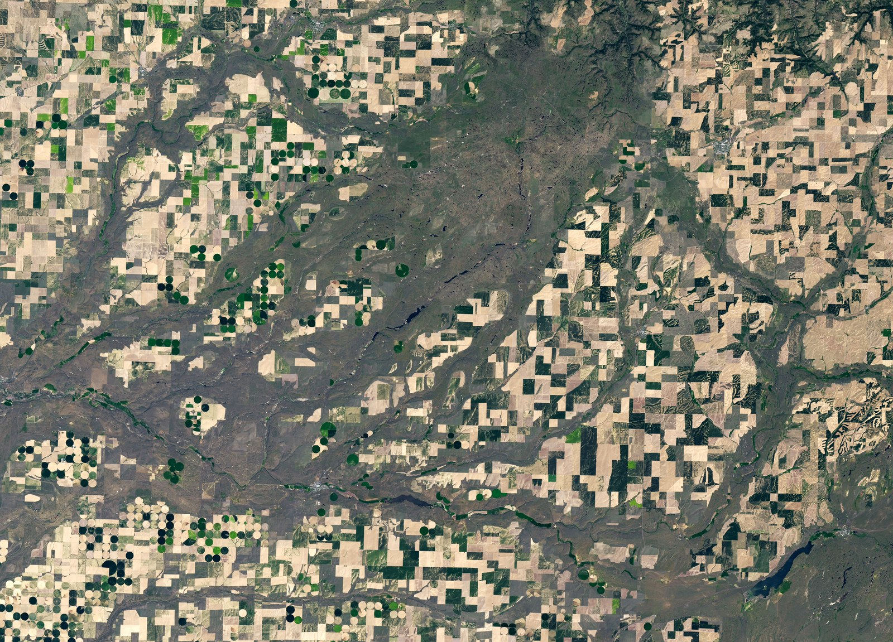

Eastern Washington is laced with empty channels too large for the creeks inside them. The scars are real — left by Ice Age floods from a vanished lake.
Channeled Scablands · Washington

NASA Earth Observatory / Landsat + SRTM (Channeled Scablands) · Public domain (NASA)
No film companion yet
This page stands on its own. When a public YouTube ID is added to the story record, an embed appears here automatically.
Channels without enough river
From orbit, eastern Washington looks scratched — long coulees, basalt stripped bare, dry cataracts perched above tiny modern streams. The mismatch is the clue. Ordinary gradual erosion struggles to explain landforms this oversized.

A lake held by ice — then released
Near the end of the last Ice Age, the Cordilleran Ice Sheet dammed the Clark Fork River. Behind that ice dam, Glacial Lake Missoula grew in what is now western Montana — a volume NASA Earth Observatory compares to the combined waters of Lakes Erie and Ontario.
When the dam failed, floodwater tore southwest across the Columbia Plateau. The dam rebuilt and failed again — dozens of times over thousands of years, according to Ice Age Floods syntheses. Each pulse scoured basalt into channels, potholes, giant gravel bars, and current ripples at landscape scale.
Eastern Washington — coulee country between Spokane and the Columbia.
How to read the scars

Flood-scoured channels cut into Columbia River Basalt — farmable land stops where the flood stripped soil. NASA EO / Landsat 8 · Scars of Ice Age Floods · Public domain
Dry Falls is a scalloped cliff line — a cataract without water — hundreds of feet high and miles wide. In flood it was a waterfall of continental scale; today it is a dry signature you can stand beside. Coulees are the empty highways. Ripples and bars are the deposits.
Satellites make the network obvious: anastomosing channels too wide for today’s creeks. Once you see the flood path, the scablands stop looking random.